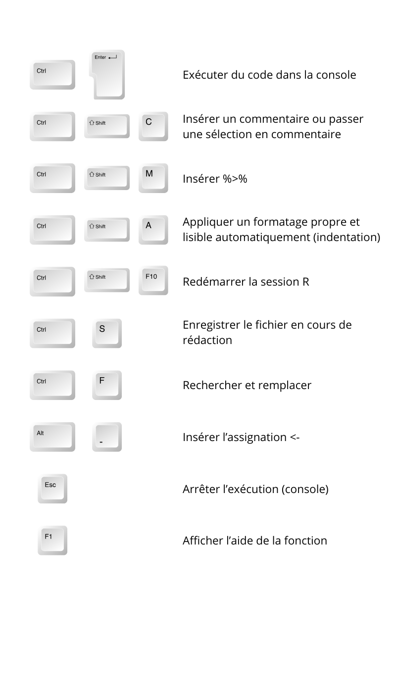
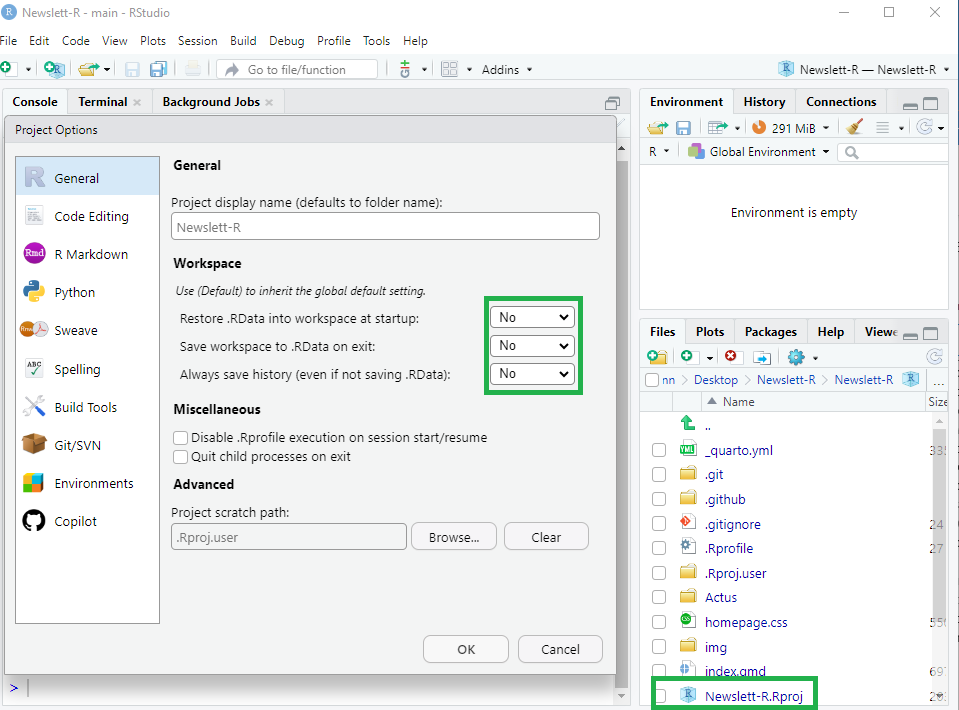
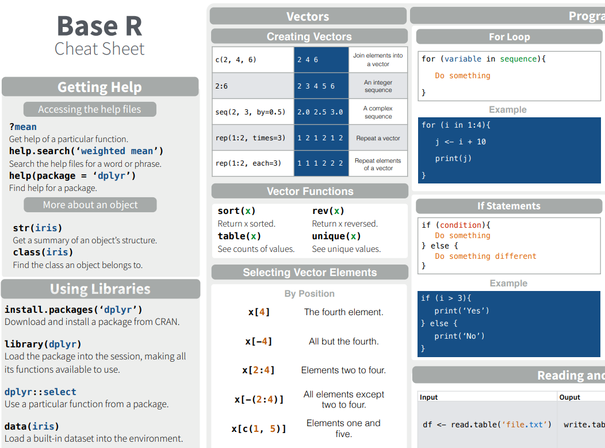
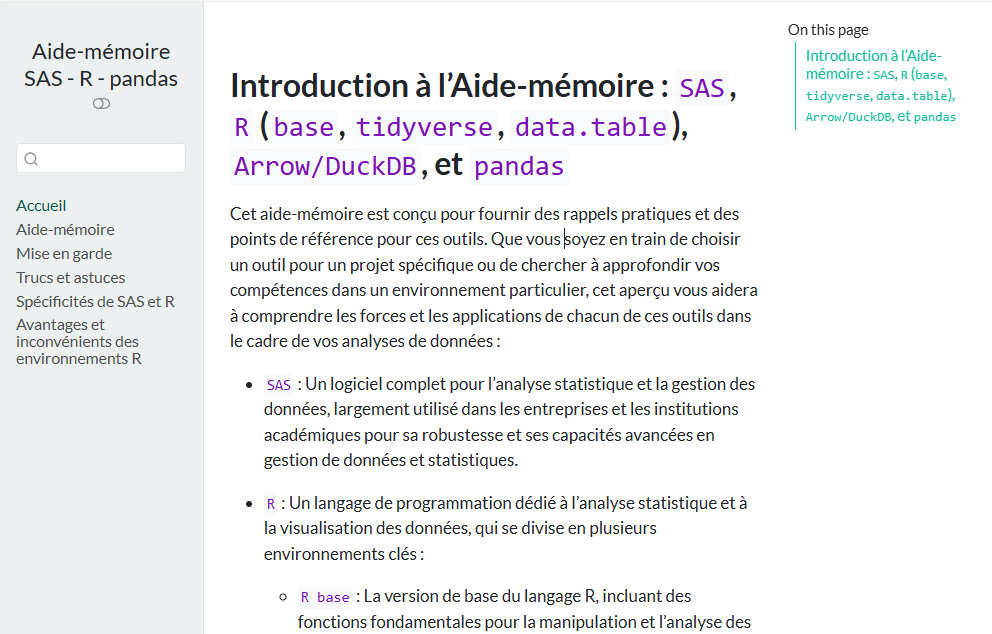
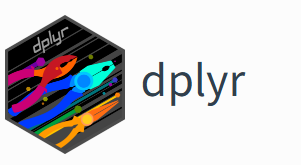

Newslett’R
Chaque semaine, nous vous proposons une astuce en R, accompagnée de quiz et d’exercices, pour tous les niveaux – débutant, avancé ou expert – afin de perfectionner votre maîtrise de R.
Les dernières newslett’R :




